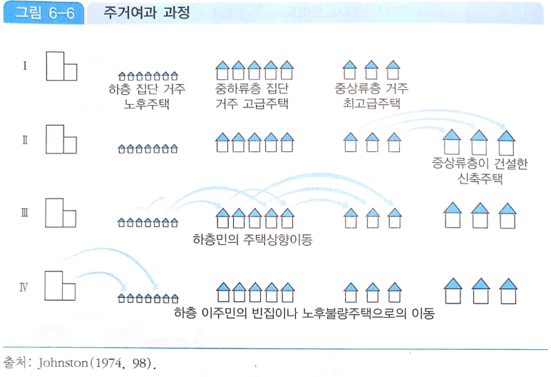
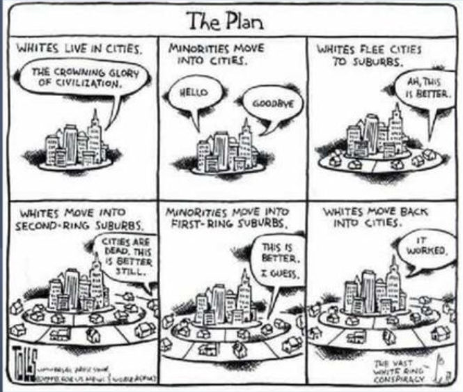
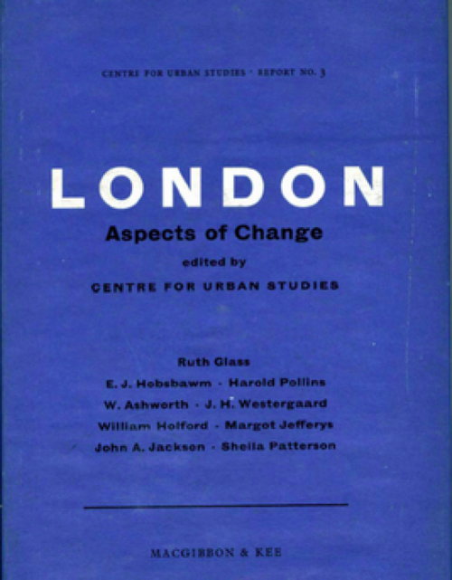

10주차. 도시주택과 공공정책
지난 시간: 이웃과 토지이용정책
→ 오늘은 주택시장 자체의 구조를 봄: 주택은 내구적이라 시간이 지나며 품질이 내려가고,
그래서 시장이 여러 하부시장으로 이어져 있음. 그 구조 위에서 주택정책을 평가함
주택의 특성
“유능한 사람은 누구나 그의 집을 지키기 위해 싸울 것이나, 그 누구도 자신의 하숙집을 위해 전쟁에 나서는 사람에 대해 들어보지 못하였다.” 마크 트와인
내구성: 수십년 간 상품으로 활용
이질성: 크기, 연식, 배치, 위치 등 차이 → 도시주택시장은 상호의존적인 하부시장의 집합
재산축적의 주된 수단: 주택가격의 변화가 가구재산에 큰 효과를 냄
→ 이 세 성질 때문에 한 하부시장의 정책이 다른 하부시장으로 번짐
01 여과: 내구성과 하부시장들
주택은 품질사다리를 타고 내려간다 · 교재 p.362~369
주택의 여과과정 (filtering process)
주택품질이 서로 다른 여러 하부시장이 존재할 때 소득계층 변화나 시장 조건에 따라
주택의 질적수준과 가치가 변하고 그에 따라 소비자가 이동하는 현상

출처: 『도시지리학개론』 p.270, 그림 6−6 (Johnston, 1974, 98),
blog.naver.com/jmd0104/222689504244 재인용

출처: Toles, “The Plan”,
The Impacts of Gentrification on Gentrified Neighborhoods slideplayer.com
상호의존적인 도시주택시장 모형
높은-품질 시장
$H_t = \underbrace{H_{t-1}(1-f)}_{\text{남아 있는 주택}} + \underbrace{\text{new}}_{\text{신규 주택}}$
100 × 0.9 + 18 = 108
낮은-품질 시장
$L_t = \underbrace{L_{t-1}(1-r)}_{\text{남아 있는 주택}} + \underbrace{f \cdot H_{t-1}}_{\text{하향 여과}}$
200 × 0.94 + 100 × 0.1 = 188 + 10 = 198
→ 높은-품질에서 빠진 $f \cdot H_{t-1}$ 이
낮은-품질로 들어옴: 두 시장은 여과로 연결됨
f: 낮은-품질로 하향 여과한 높은-품질 주택의 비중
r: 시장에서 퇴출된 낮은-품질 주택의 비중
단순화: 신규 주택은 모두 높은-품질, 낮은 품질에서 높은 품질로 올리는 것은 엄두도 못 낼 만큼 비쌈
도시주택시장 모형에 따른 여과과정
- 출발: 높은-품질 주택 65채
오른쪽으로 갈수록 높은-품질 ↑ · 낮은-품질 ↓ - 비용: 높은-품질 유지의 한계비용은 우상향
20번째 115(a) · 40번째 200(b) · 50번째 250달러(c) - 편익: 두 시장의 가격 차이 $p_h - p_l$ (수평선)
- 균형: 편익 = 비용인 점 b
처음 40채는 남고 나머지 25채는 하향 여과 - 가격 차이 변화: 200 → 250달러로 벌어지면
남는 주택 40 → 50채, 하향 여과 25 → 15채
높은/낮은-품질 주택의 공급
시장공급 = 남아있는 공급 + 신규공급
* 굴절점 아래에서는 새로 들어오는 것이 없어
시장공급이 「남아 있는」 공급과 같음
시장공급 = 남아있는 공급 + 하향여과된 공급
여과모형의 응용: 건축허가에 대한 제한
신규주택의 금지효과: 신규주택공급 X → 높은-품질주택의 가격상승
→ 낮은-품질주택의 공급 감소(보다 적은 여과) + 높은-품질에서의 잔여수요 이동 → 낮은-품질주택의 가격도 상승
젠트리피케이션
영국의 사회학자 Ruth Glass가 처음 제시한 개념(1964)
- 런던 도심의 변화 분석(1950~1960s)
젠트리(Gentry) + 화(化)
영국 사회에서 귀족 아래에 위치하는 중상류 토지소유자
→ 도심의 노동계층 거주지가 상류층 및 중산층의 거주 및 소비를 위해
재활성화(rehabilitation) 되는 현상 (Smith and LeFaivre, 1984)

출처: Centre for Urban Studies (ed.),
London: Aspects of Change 표지
여과와 젠트리피케이션
높은 소득 가구의 유입 → 높은 품질 주택에 대한 수요 증가
→ 보다 적은 하향 여과 + 보다 많은 품질 개선으로 인한 낮은 품질 주택 공급 감소
→ 고소득 가구 유입을 통한 높은-품질 가격이 낮은-품질 가격도 상승시킴
공급 및 수요측면 공공정책
이런 문제를 해결하기 위해 어떤 정책을 쓸 것인가?
공급측면
공공주택 혹은 공공지원 민간주택 공급
수요측면
주택쿠폰 또는 바우처의 지급(임대료 지원)
02 공급-측면 공공정책
공공주택에 쓴 1달러가 수혜자에게 얼마가 되는가 · 교재 p.370~374
공공주택의 공급효과
공공주택: 임차료는 소득의 30%까지, 나머지는 연방정부 부담
- 지원 전 (점 a): 소득 1,000달러 가구의 선택
주택 400 · 다른 재화 600 - 공공주택 (점 b): 주택 660 · 다른 재화 700
임차료 300달러. 예산선 바깥이라 후생 증가 - 현금으로 환산 (점 c): 240달러를 현금으로 주면
점 b 와 같은 무차별곡선에 도달 → 편익 240달러 - 정부 비용: 생산비 1,320 − 임차료 300
= 1,020달러
→ 공공주택 1달러의 편익은 0.24달러 (240 ÷ 1,020)
민간주택의 공급효과
낮은 소득 가구 지원을 위한 민간주택 공급 프로그램
프로젝트 기반 임대지원 프로그램:
공정시장 임대료와 규제된 임차인 지불금액 간 차이를 정부가 보조
낮은 소득 주택에 대한 세금공제:
공급 주택에서 일정 비중으로 낮은 소득 주택을 건설하는 기업에게 세제지원
여과와 밀어내기 (crowding out)
공공주택과 지원받는 민간 주택은 보조를 받지 않는 주택을 대체하여
주택 총량의 순증가를 감소시킴
이유
퇴출 주택 수의 증가: 낮은 품질 주택의 이득 감소로 인한 방기나 용도전환
보다 느린 하향 여과: 낮은 품질 주택 가격하락으로 중간 품질 주택의 하향이동 감소
03 수요-측면 공공정책
돈을 주고 고르게 하면 어떻게 다른가 · 교재 p.375~381
주택바우처의 효율성
주택바우처의 액면가 = 공정시장임대료 − 임차인 기여분
점 a:바우처 전 효용 극대화 (예산 1,000달러)
점 m:새 예산선의 끝점 = 최소 품질표준
바우처는 350단위 이상의 주택에만 쓸 수 있어
그보다 작은 주택에서는 예산선이 올라가지 않음
점 c:바우처 후 효용 극대화 (주택 440단위)
순비용 200달러, 다른 재화에 800달러
점 b:공공주택의 소비점 (앞 장의 점 b)
바우처와 공공주택의 효율성 비교
두 프로그램 모두 같은 무차별곡선의 같은 지점에서 소비
→ 바우처 비용: 240불 / 공공주택: 1,020불
주택바우처의 시장효과
수요곡선의 우측이동 → 가격 상승 및 공급 증가
(∵ 보다 낮은 퇴출비율 + 보다 높은 여과비율)
보다 빠른 하향여과 → 공급곡선의 좌측이동
→ 가격 상승 및 공급 감소
→ 중간-품질 가격이 오르면 높은-품질에서 중간-품질로의 여과율이 올라 높은-품질 가격도 오름
→ 바우처는 주택 시장 전체의 가격 상승을 부추길 수 있음
주택담보대출 이자 지원의 효과
주택담보대출 이자를 소득에서 공제하는 방식 → 조세지출의 형태로 주택소유주의 가처분소득을 증가
한계사회편익:주택자본 투자에 따른 편익
한계사회비용:주택자본 1달러 투자에 따른
다른 사회자본 가치의 희생
→ 주택담보대출 이자 지원은 주택자본의 사적비용을 낮춰
사회적 최적보다 더 공급시킴
→ 도로, 학교 등 다른 자본에 투입되었을 때 더 생산적일 것
주택담보대출 관련 용어
LTV
주택담보인정비율
집값 대비
받을 수 있는 대출의 비율
집값으로 한도를 정함
DTI
총부채상환비율
연소득 대비 새 주담대
원리금과 기존 대출
이자의 비율
+ 기존 대출 연 이자연소득× 100
신DTI
신총부채상환비율
DTI 에 기존 주담대의
원금 상환액까지 넣은
비율 (2018년 1월 시행)
+ 다른 대출 연 이자연소득× 100
DSR
총부채원리금상환비율
연소득 대비
모든 대출 원리금의 비율
연 원리금 상환액연소득× 100
스트레스 DSR
금리 상승 가정
금리가 오른다고 가정하고
계산한 DSR
(심사에만 쓰임)
계산한 모든 대출의
연 원리금연소득× 100
주: 칠한 칸이 분자에 들어가는 상환액이다. 대출 한도는 각 기준을 함께 충족해야 한다. 스트레스 금리 = 과거 5년 최고 금리 − 현재 금리
출처: 토스뱅크 tossbank.com/articles/ltv · 경북매일 kbmaeil.com/article/201801080211194 · KB Think kbthink.com/loan-guide/stressdsr.html
Q & A
권규상 Kyusang Kwon
(kyusang.kwon@chungbuk.ac.kr)